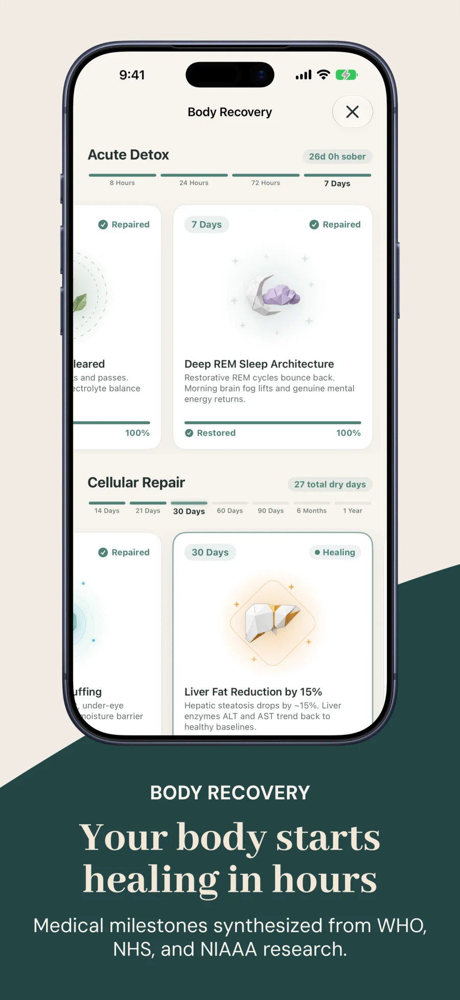

One of the most immediate and visible consequences of drinking alcohol is what dermatologists and physiologists call alcohol-induced facial edema—commonly referred to as "alcohol face" or "wine bloat." Waking up after drinking with swollen eyelids, puffy cheeks, a softened jawline, and blotchy redness is an almost universal experience.
While many assume facial bloating is just a surface cosmetic issue, it is actually the direct mirror of three distinct physiological disruptions: vasopressin-driven fluid rebound, acetaldehyde vasodilation, and HPA-axis cortisol dysregulation. The encouraging reality is that facial tissue is remarkably resilient, and recovery begins within hours of putting down your glass.
| Recovery Milestone | Physiological Process | Visible Facial Changes |
|---|---|---|
| 24 to 48 Hours | Vasopressin (ADH) levels rebalance; cellular rehydration begins | Acute "morning after" under-eye puffiness peaks and begins receding |
| Day 3 to 7 | Capillary permeability normalizes; lymphatic drainage clears excess interstitial fluid | Cheek swelling drops; flushing and blotchy vascular redness subside |
| Day 14 (Week 2) | Gut mucosal barrier repairs; systemic endotoxin leakage (LPS) decreases | Jawline and chin contour become significantly sharper; pore texture refines |
| Day 30 (Month 1) | HPA axis resets; nocturnal cortisol normalization reverses "moon face" | Full facial structural restoration; inflammation-free natural skin glow |
Why Alcohol Causes Face Bloating and Puffiness
To understand how long it takes for facial swelling to disappear, it helps to understand why ethanol makes facial tissue hold fluid in the first place. Four biological mechanisms operate simultaneously:
- The Vasopressin Rebound Paradox: Alcohol inhibits the pituitary gland's secretion of antidiuretic hormone (ADH / vasopressin), causing your kidneys to dump water rapidly. When BAC drops back to zero, the endocrine system overcompensates by aggressively hoarding water and sodium in subcutaneous connective tissues—particularly the delicate, low-density interstitial matrix under your eyes and around your cheeks.
- Capillary Leakage & Histamine Release: Acetaldehyde, the toxic primary metabolite of alcohol, stimulates mast cell degranulation and histamine release. This dilates facial microcapillaries, increasing vascular permeability and allowing intravascular fluid to leak into surrounding dermal layers, producing characteristic flushing and tissue swelling.
- Cortisol & "Alcohol Moon Face": Regular or heavy alcohol intake activates the hypothalamic-pituitary-adrenal (HPA) axis, elevating baseline serum cortisol. Hypercortisolemia promotes central adiposity and fluid retention in facial tissue—a clinical phenomenon known as pseudo-Cushing's syndrome or "alcohol moon face."
- The Gut-Skin Axis & Endotoxemia: Alcohol loosens intestinal tight junctions, allowing bacterial endotoxins (lipopolysaccharides) into the bloodstream. This low-grade systemic inflammation expresses directly through skin congestion, redness, and sluggish lymphatic drainage.
The 30-Day Face Bloating Recovery Timeline
Days 1 to 2: Restoring Electrolyte and Fluid Balance
During the first 24 to 48 hours without alcohol, your primary objective is cellular rehydration. As the diuretic effect wears off and vasopressin production returns to normal circadian rhythms, drink plenty of water with balanced electrolytes (potassium, magnesium, and sodium) to prevent your body from clinging to emergency fluid reserves. By the end of Day 2, acute orbital puffiness begins draining.
Days 3 to 7: Lymphatic Drainage and Calming Redness
Between Days 3 and 7, liver enzymes clear remaining circulating acetaldehyde, allowing dilated capillaries to constrict back to normal resting diameters. The lymphatic vessels surrounding your jawline and neck, which were overwhelmed by inflammatory interstitial fluid, begin draining efficiently. Most people report looking noticeably less "tired" and less flushed in mirrors by the end of their first sober week.
Built into Alcohol Free Tracker
Watch your body recovery milestones unlock hour by hour
Track blood sugar normalization, REM sleep recovery, and cellular inflammation clearance on an evidence-based timeline. 100% private, offline, and stored locally on your iPhone.
Track My Recovery Free on iOS →
Day 14: The Jawline and Skin Barrier Turning Point
By two weeks alcohol-free, the gastrointestinal lining has undergone substantial cellular turnover. With intestinal permeability restored, systemic inflammatory cytokines drop significantly. You will observe your natural bone structure re-emerging: the jawline sharpens, cheekbones become more distinct, and skin barrier lipid production recovers, reducing dry patches and excess oil compensation.
Day 30: Cortisol Normalization and True "Before & After"
Reaching 30 days alcohol-free marks the full hormonal reset. Chronic cortisol elevation drops back to baseline, causing the deep subcutaneous fluid and fat distribution characteristic of "cortisol moon face" to fully resolve. Side-by-side photographic comparisons at Day 30 consistently show a dramatically leaner, more energized, and healthier facial appearance.
How to Accelerate Facial Recovery After Drinking
- Targeted Hydration: Consume water supplemented with potassium and magnesium to encourage your kidneys to flush stored extracellular sodium.
- Elevation During Sleep: Sleep with your head slightly elevated on an extra pillow to prevent gravity-assisted fluid pooling in facial tissues overnight.
- Gentle Lymphatic Massage: Use gentle downward strokes along the sides of the neck toward the clavicle to stimulate cervical lymph node drainage.
- Cold Compresses: Apply cold towels or ice globes to the periorbital area to induce vasoconstriction and reduce acute swelling.
- Consistent Tracking: Keeping an honest, shame-free log of your alcohol-free days helps you connect the visible glow in the mirror with the physiological healing happening inside.